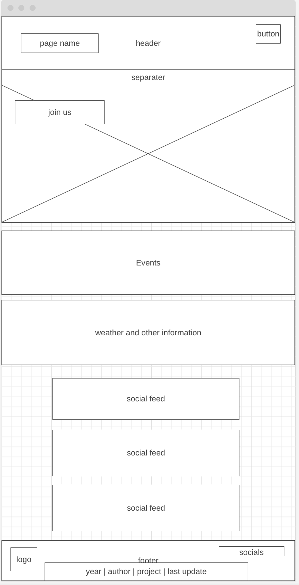
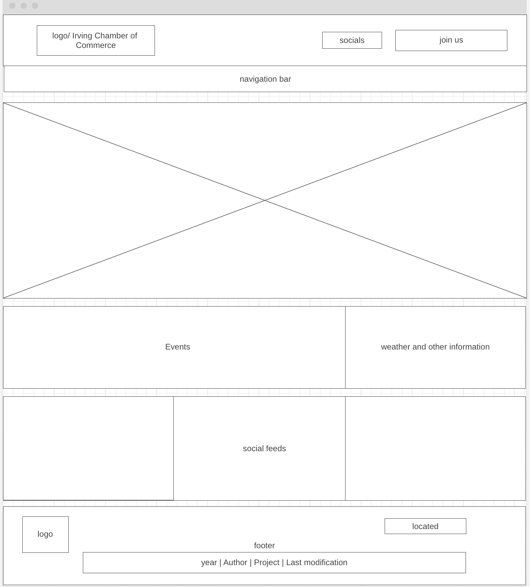

Color Schema
The following colors are what will be used for the backgrounds and for-grounds for the Irving Chamber of Commerce site.
| Primary [#780000] | Secondary [#FDF0D5] | Accent 1 [#FFBCC1] |
|---|---|---|
Wireframes
the following set of images outline and depict a rough idea of how the Irving Chamber of Commerce site will be laid out visually.
 